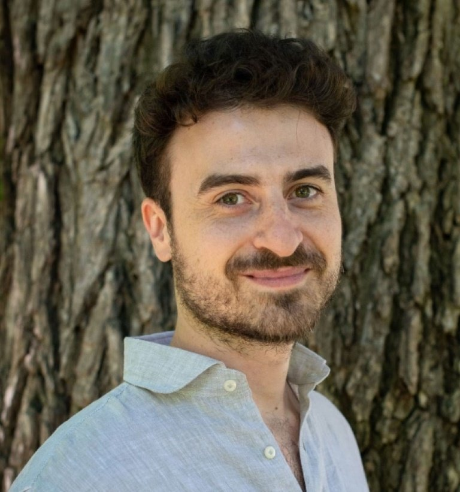
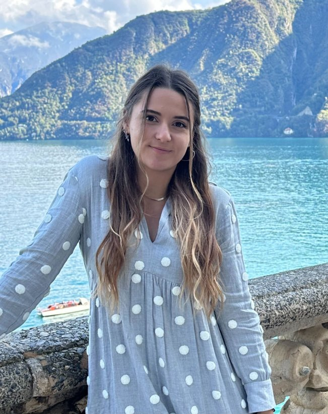
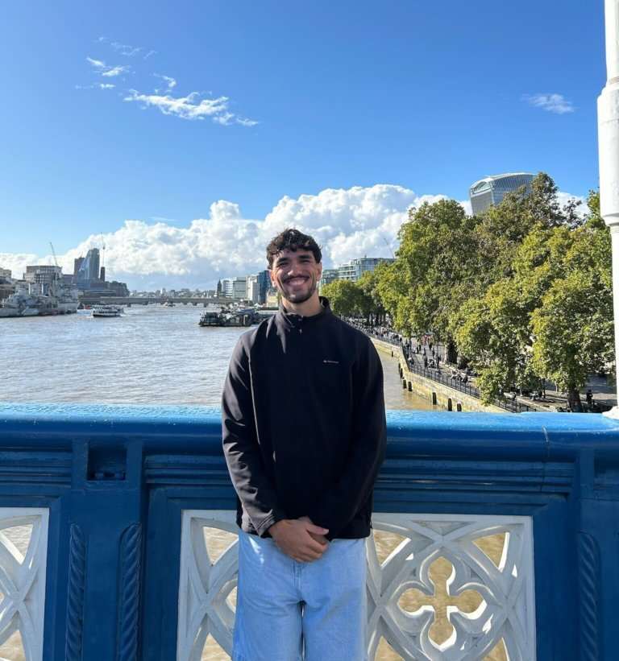
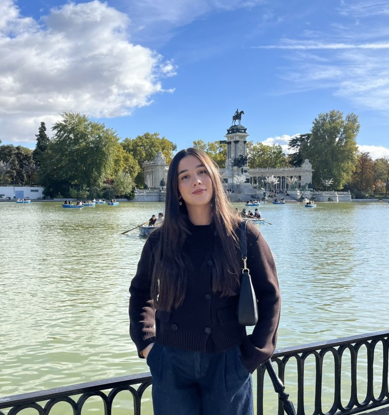

People
Our lab brings together researchers at different stages of their scientific careers, united by curiosity and a shared passion for understanding the brain.

Dr. Francesco Paolo Ulloa Severino
Tenured Researcher (Científico Titular) · Cajal Neuroscience Center (CNC-CSIC), Madrid
Department of Computational and Systems Neuroscience
Francesco is a Tenured Researcher at the Cajal Neuroscience Center (CNC) in Alcalá de Henares, Madrid (ES). He joined the Cajal Institute as a Ramón y Cajal awardee in 2023. He graduated in General and Applied Biology at the University of Naples Federico II, Napoli (IT), has a Master's in Molecular Biology, and earned his Ph.D. in Neurobiology at SISSA, Trieste (IT). In 2018, he started his postdoctoral research at Duke University (NC, USA).
Email: francesco.ulloa@cajal.csic.es · Av. de Leon 1, Campus Universitario, 28805 Alcalá de Henares, Madrid

Marta González Martín
Marta earned her degree in Biology from the Autonomous University of Madrid, where she first gained laboratory experience in a research group within our center. She later completed a Master's degree in Translational Neuropsychopharmacology at Miguel Hernández University of Elche. Although she initially began her research career in other scientific fields, she soon realized that neuroscience was what truly sparked her scientific curiosity. This led her back to the Cajal Neuroscience Center, where she joined our laboratory to pursue her PhD. Alongside her enthusiasm for travel and CrossFit, Marta is passionate about uncovering how the brain works and how it shapes behavior.

Daniel Atienza Ramos
Daniel holds a degree in Psychology from the Autonomous University of Madrid (UAM) and is currently a student of the Master's degree in Neuroscience at the same university. A fan of reading and sports, always eager to learn new things.

Sara Mozas Lendinez
Sara holds a degree in Biotechnology and is currently pursuing a Master's degree in Neuroscience at the Autonomous University of Madrid (UAM). Two words define her: curiosity, which shapes her perspective, and precision, which guides her approach. Both are essential in research and in photography, another one of her passions.

Victor Illán Almarza
Victor holds a degree in Health Biology from the University of Alcalá. After his bachelor thesis in our laboratory, he decided to stay with us and pursue his Master's degree in Neuroscience at the Autonomous University of Madrid. He is passionate about animals and reading, and his curiosity motivates him to keep learning and exploring new ideas.

Maika Fernandez
Maika holds a degree in Biotechnology and is currently pursuing a Master's degree in Neuroscience at the Complutense University of Madrid (UCM). She is interested in research on the cellular and molecular mechanisms underlying the functioning of the nervous system. She considers herself persistent, proactive, and a strong team player. Outside the laboratory, she channels the same curiosity into traveling and reading.

Francesca Barracca
Francesca holds a Bachelor's degree in Biology and a Master's in Neuroscience from the University of Naples Federico II. She joined our laboratory through an Erasmus Traineeship program, perfectly combining her love for travel and discovering new cultures with her passion for scientific exploration. She is deeply fascinated by cell culture work, finding inspiration in the microscopic world to uncover the secrets of the brain.
Join the Lab
Motivated PhD students and postdocs are welcome to apply.
Get in touch →